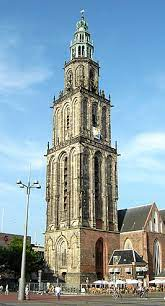

Feitjes
- Groningen is de grootste stad in de provincie Groningen.
- De stad is ontstaan in de 10e eeuw.
- Groningen was ooit een belangrijke havenstad.
- De Martinitoren is de oudste toren van de stad.
- Groningen is bekend om zijn universiteit en studentenleven.
Martinitoren
De Martinitoren is een iconische bezienswaardigheid in de prachtige stad Groningen. Deze imposante toren staat midden in het historische centrum van de stad en is al eeuwen een belangrijk symbool voor de inwoners van Groningen.
De Martinitoren werd gebouwd in de 14e eeuw als onderdeel van de St. Martini-kerk. Hoewel de kerk in de Tweede Wereldoorlog grotendeels werd verwoest, bleef de toren staan als een herinnering aan de rijke geschiedenis van de stad. Vandaag de dag is de Martinitoren een van de oudste gebouwen van Groningen en een populaire attractie voor toeristen.
Een van de meest indrukwekkende kenmerken van de Martinitoren is zijn hoogte. Met zijn 97 meter is het de hoogste toren van Groningen en biedt het een prachtig uitzicht over de stad. Bezoekers kunnen naar boven klimmen via een smalle trap en genieten van een panoramisch uitzicht over de historische daken van Groningen.
Noordelijke Rekenkamer

De Noordelijke Rekenkamer in Groningen is een prachtig historisch gebouw dat dateert uit de 17e eeuw. Het is een van de oudste gebouwen in de stad en heeft een rijke geschiedenis als onderdeel van de economische en administratieve infrastructuur van Groningen.
Het gebouw was oorspronkelijk bedoeld als een centrum voor de administratie van de stad, waar belastingen werden geïnd en boekhouding werd gedaan. In de loop der jaren heeft het verschillende functies gehad, waaronder een rechtbank, een gevangenis, en zelfs een brandweerkazerne.
Vandaag de dag is de Noordelijke Rekenkamer een museum, dat bezoekers een unieke kijk geeft in de geschiedenis van de stad. Er zijn talrijke exposities te vinden over de economische en administratieve geschiedenis van Groningen, samen met interessante artefacten en documenten die de geschiedenis van het gebouw zelf weergeven.